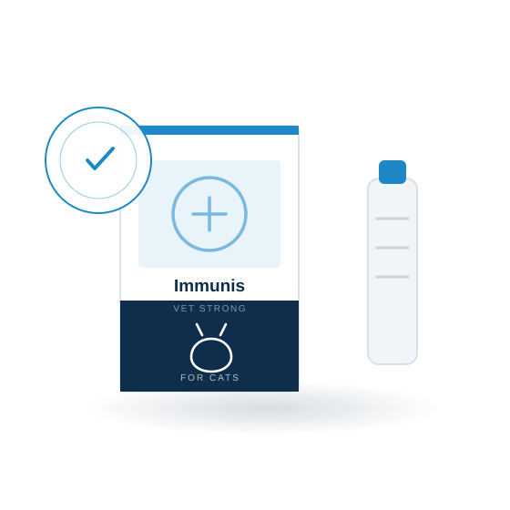
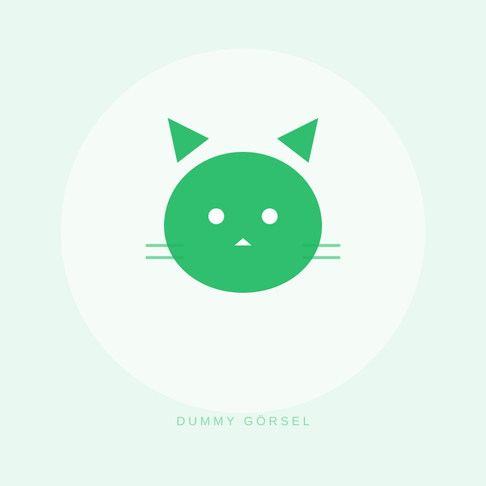
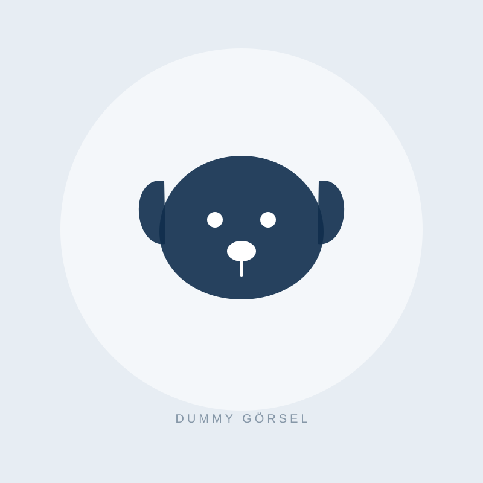
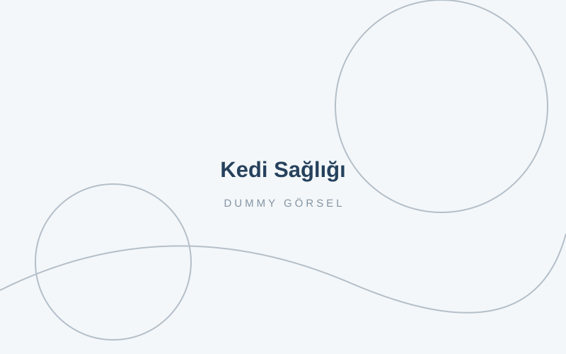
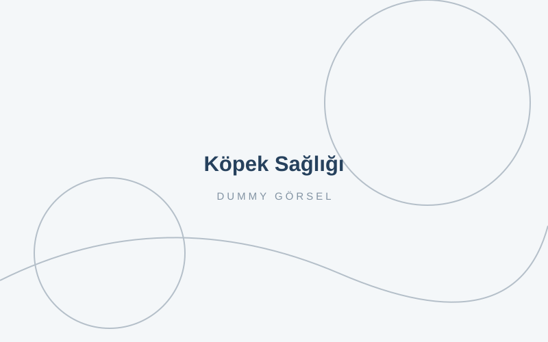
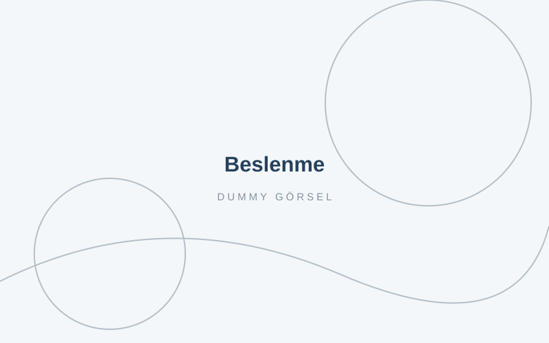

Dostlarınız için güçlü beslenme
VET STRONG; kedi ve köpekler için malt, mama ve besin takviyesi üretir. Formüllerimiz veteriner hekimlerle birlikte geliştirilir, kendi tesisimizde üretilir.
 TÜY YUMAĞI KONTROLÜ
TÜY YUMAĞI KONTROLÜ
İhtiyacınız olan desteği seçin
Ürünlerimizi hayvanınızın ihtiyacına göre filtreleyerek inceleyebilirsiniz.
Kedi Ürünleri


Alt Markalarımız
Köpek Ürünleri


Ürünlerimize ulaşın
Satış işlemleri anlaşmalı pazaryerleri üzerinden gerçekleşir. Ürün sayfalarındaki bağlantılarla doğrudan mağazamıza gidebilirsiniz.
Bakım ve Beslenme Rehberi

Kedilerde Malt Neden Gerekli ve Nasıl Kullanılır?
Tüy yumağı kedilerin en sık yaşadığı sindirim sorunlarından biri. Maltın nasıl çalıştığını, ne sıklıkla ve hangi dozda verilmesi gerektiğini anlattık.

Köpeklerde Eklem Sağlığı: Erken Belirtiler ve Alınacak Önlemler
Büyük ırklarda ve yaşlanan köpeklerde eklem sorunları sessizce ilerler. Fark edilmesi gereken ilk işaretleri ve destekleyici beslenmeyi derledik.

Mama Değişimi Nasıl Yapılır? 7 Günlük Geçiş Planı
Ani mama değişimi ishal ve kusmaya yol açabilir. Kedi ve köpeklerde sorunsuz geçiş için uygulanması gereken kademeli planı hazırladık.
Strong Life, Healthy Friends...